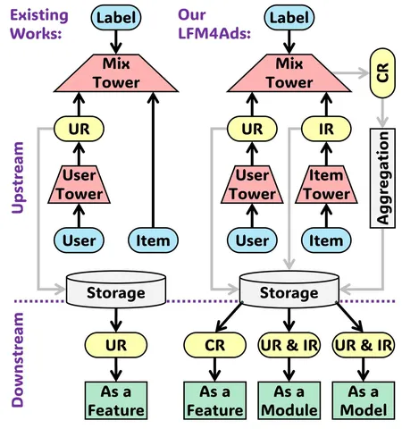

Сегодня разбираем свежую статью Tencent с интригующим названием, содержащим слова large и foundation. Обращает на себя внимание и список авторов: он очень длинный, что обычно указывает на масштабный внутренний проект, важный для компании.
В работе предлагают инкорпорировать большую вычислительно дорогую foundation-модель в более компактные CTR-модели ранжирования. Но авторов не устраивает простое подключение выходов в качестве эмбеддингов или скалярных признаков. Инженеры хотят использовать знания большой модели более умным способом, сохраняя эффективность в проде.
Авторы пишут, что обычно большие foundation-модели используют только user-представления, игнорируя другие важные сигналы. Предлагается перенести в downstream-модель все три вида: user-, item- и user-item-представления.
Напрямую работать с сырыми кросс-представлениями невозможно: они жёстко привязаны к конкретным парам user–item, и для каждой такой пары пришлось бы вычислять большую модель в онлайне. Именно этого авторы стараются избежать, предлагая обновлять и хранить агрегированные user- и item-векторы асинхронно.
Интересная находка: лучшие результаты даёт не использование последнего слоя модели, а извлечение представлений из предпоследнего, хотя замеры противоречивые — на графиках виден шум.
Архитектура Triple Tower
Для обучения используется так называемый triple tower design:
— user-башня,
— item-башня,
— mix-tower для их взаимодействия.
При этом архитектура разделена на две ветви (dual-branch design): одна обучается на органическом контенте (просмотры, лайки, комментарии), другая — на рекламных сэмплах (клики, конверсии). User- и item-вектора остаются общими, а cross-вектор извлекается только из рекламной ветви, так как он ближе к целевым downstream-задачам.
Авторы описывают три способа интеграции foundation-модели в downstream CTR-модель: добавление представлений в качестве новых фичей, подключение блока обработки внутри архитектуры, использование всей большой модели для генерации кандидатов.
Простое добавление эмбеддингов в downstream-модель работает плохо: пробовали и линейные проекции, и alignment-лоссы, но улучшений не добились. Вместо этого применяют другой приём: каждую входную фичу комбинируют с представлением из foundation-модели с помощью покомпонентного умножения и нелинейности. Таким образом, user-item-вектор встраивается в модель уже на уровне входных признаков.
Эксперименты и результаты
Валидацию делали только на внутренних данных Tencent: больших датасетах с рекламными и органическими действиями, онлайн-A/B-тестах. Авторы пишут что систему внедрили уже в десяти с лишним продуктах экосистемы и получили рост GMV на 2,45% по всей платформе.
Больше о внедрении фундаментальных моделей применительно к экосистеме Яндекса можно узнать в канале руководителя службы рекомендательных технологий Николая Савушкина — @light_from_black_box.
@RecSysChannel
Разбор подготовил
